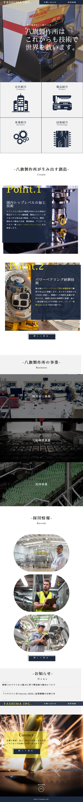
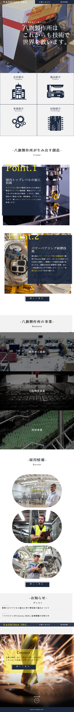
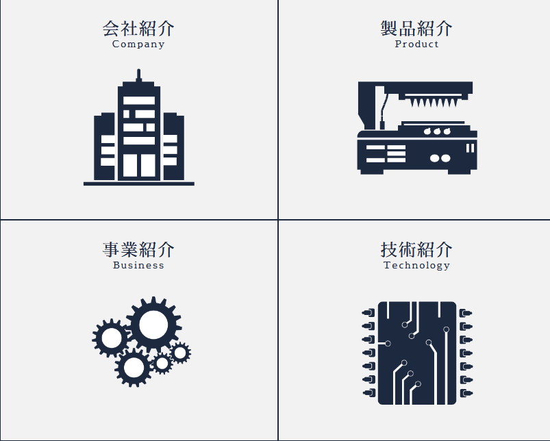

Web Design
八旗製作所 YAHATA

| コーディング | TOPページ、aboutページ、CONTACTページ |
|---|---|
| 使用ソフト&スキル | HTML/CSS、Javascript、jQuery、VScode、XD、illustrator |
| プロジェクト名 | 株式会社八旗製作所のリニューアルサイト |
|---|---|
| 制作の目的 | 古いサイトのリニューアル。Webからのお問い合わせを増やす。 会社の技術力をアピールし、知名度を向上させる。 |
| 担当範囲 | デザイン/コーディング |
| 制作期間 | 1.5ヶ月 |
| レスポンシブ | スマートフォン/PC |
| ターゲット | 新規顧客、就活生、取引先企業 |
| サイトURL | https://github.com/MASAKi-cell/Nabeshima |
|---|---|
| GitHub | https://github.com/MASAKi-cell/masaki-cell.github.io-corp |
 

工夫したところ
グローバルナビゲーションの右側にお問い合わせ欄用情報を配置し、常に顧客が辿り着きやすいようにしました。
自社の技術力の強みが明確に分かるように、配置しました。
メインビジュアルの写真を少し暗めのトーンにしフォントは「さわらび明朝体」を採用。
色は青を基調とした配色で信頼感や堅実性を表しました。
また、アクセントカラーに対象色相の黄色を設定し注目させたい文字を際立たせました。 全体的に信頼性と安定感を前面に押し出すデザインを心がけました。

メインビジュアルに社内工場の内観と、技術力をイメージ した写真を掲載しています。リード文に企業理念を簡潔に掲載。

採用情報欄に社員の笑顔や実際に働いている写真を掲載し 職場のイメージを伝えています。

会社情報、技術情報をillustratorで自作したアイコンで表現してます。